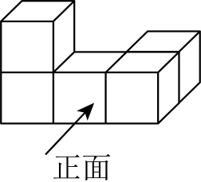
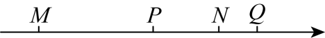
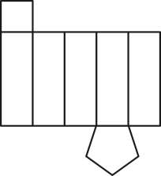
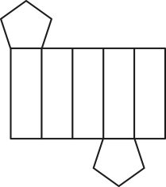
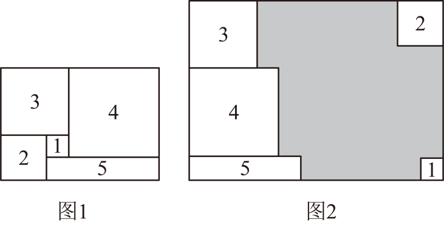
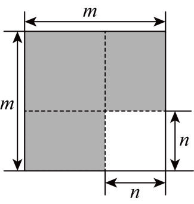
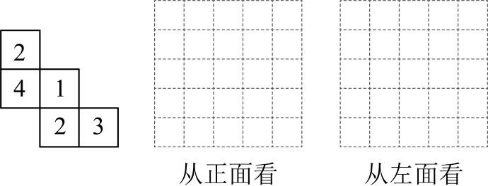

七年级数学上学期期中模拟卷·培优卷
【北师大版2024】
时间：120分钟 满分：120分 测试范围：第1章 丰富的图形世界~第3章 整式及其加减
姓名：___________班级：___________考号：___________
考卷信息：
本卷试题共24题，单选10题，填空6题，解答8题，满分120分，限时120分钟，本卷题型针对性较高，覆盖面广，选题有深度，可量化学生的掌握程度！
第Ⅰ卷
一．选择题（共10小题，满分30分，每小题3分）
1．（3分）（24-25七年级上·甘肃武威·期中）如果向西15米记作+15米，那么向东20米记作（ ）米．
A．+5 B．+20 C．−5 D．−20
2．（3分）由5个小立方体搭成如图所示的几何体，从左面看到的平面图形是（ ）

A． B． C． D．
C． D．
3．（3分）（25-26七年级上·全国·阶段练习）研究表明，可燃冰是一种代替石油的新型清洁能源，在我国某海域已探明的可燃冰储量达1500000000000m3，该数字用科学记数法可表示为（ ）
A．1.5×1010 B．0.15×1012 C．1.5×1011 D．1.5×1012
4．（3分）（24-25七年级上·广东中山·期中）下列关于多项式2a2b+ab−1的说法中，正确的是（ ）
A．它是五次三项式 B．二次项系数是0
C．最高次项是2a2b D．常数项是1
5．（3分）（25-26七年级上·河南信阳·阶段练习）如图，四个有理数在数轴上的对应点分别为点M，P，N，Q，若点P，Q表示的有理数互为相反数，则图中表示绝对值最大的有理数的点是（ ）

A．点M B．点P C．点N D．点Q
6．（3分）（24-25七年级上·广东佛山·期末）下列哪个图形经过折叠可以围成棱柱（ ）
A． B．
B．

C． D．
D．
7．（3分）若单项式−12ma−1n3与m3nb的和是单项式，则ab的值（ ）
A．16 B．48 C．64 D．−12
8．（3分）多项式8x2−2x−3与多项式3x3−4mx2−x+7相加后，不含二次项，则m的值是（ ）
A．2 B．4 C．﹣2 D．﹣4
9．（3分）（25-26七年级上·江苏扬州·阶段练习）若a，b互为相反数，x，y互为倒数，p是最大的负整数，p，q在数轴上对应的两点的距离是3，则a+bp+xy−q2的值是（ ）
A．−2 B．−3 C．−2或−12 D．−3或−15
10．（3分）（24-25七年级上·山东临沂·期中）如图是一种转盘型密码，每次开锁时需要先把表示“0”的刻度线与固定盘上的标记线对齐、再按顺时针或逆时针方向旋转带有刻度的转盘三次，例如，按逆时针方向旋转5个小格记为“+5”，此时标记线对准的数是5．再顺时针旋转2个小格记为“−2”，再逆时针旋转3个小格记为“+3”，锁可以打开，那么开锁密码就可以记为“+5，−2，+3．此时标记线对准的数是6．如果一组开锁密码为“−15，+10，−5”要想打开锁，按上述规定方式旋转锁盘，锁打开时标记线对准的刻度线表示哪个数？（ ）
A．10 B．0 C．30 D．25
二．填空题（共6小题，满分18分，每小题3分）
11．（3分）在一个棱柱中，一共有18条棱，则这个棱柱有个 侧面．
12．（3分）（25-26九年级上·吉林·开学考试）若2a−b+5=0，则32a+b−6b的值为 ．
13．（3分）（24-25七年级下·贵州铜仁·期末）从如图所示的7个小正方形中剪去一个小正方形，使剩余的6个小正方形折叠后能围成一个正方体，则剪去的小正方形上的字是 ．

14．（3分）如图，C，D是数轴上的两点，它们分别表示−2.4，1.6，O为原点，则线段CD的中点表示的有理数是 ．
15．（3分）将图1中周长为28的长方形纸片剪成1号、2号、3号、4号正方形和5号长方形，并将它们按图2的方式放入周长为38的长方形中，则没有覆盖的阴影部分的周长为 ．

16．（3分）（24-25七年级下·江苏泰州·阶段练习）把一个正三角形分成四个全等的三角形，第一次挖去中间的一个小三角形，对剩下的三个小正三角形再重复以上做法⋯⋯设第99次挖去后剩下的三角形个数为a，第100次挖去后剩下的三角形个数为b，那么a−23b= ；（结果用3为底数的幂表示）
第Ⅱ卷
三．解答题（共8小题，满分72分）
17．（6分）把下列各数填入表示它所属的括号内：
+2，−3，0，−312，−1.414，23，−34，21，π．
整数：{_____}；
负分数：{______}；
负有理数：{______}．
18．（6分）（25-26七年级上·全国·阶段练习）计算：
(1)6×26×(−13)÷(−136)；
(2)−14−16×[2−(−3)2]÷(−76)．
19．（8分）（24-25七年级上·甘肃兰州·期末）将8个同样大小的小正方体搭成如图所示的几何体．

(1)请分别画出从正面、左面、上面观察如图所示的几何体的形状图；
(2)若正方体的棱长为1，这个几何体表面积是 ．
20．（8分）（24-25七年级上·全国·期末）已知A=3x2−3mx+2y,B=2nx2−2x+3y，是关于x,y的多项式，其中m,n为常数．
(1)若A+B的值与x的取值无关，求m,n的值．
(2)在（1）的条件下，先化简m2n−212m2n+4n+32m2n+n，再求值．
21．（10分）（25-26七年级上·吉林长春·期末）为了更好的推进“阳光体育”活动，在八年级的足球联赛活动期间，某足球守门员在直线跑道上练习折返跑，从初始位置出发，向前跑记作正数，向后跑记作负数，他的练习记录如下（单位：m）：+5，−3，+10，−8，−6，+13，−10．
(1)守门员最后是否回到了初始位置？
(2)本次练习中守门员共跑了多少米？
22．（10分）如图，将边长为m的正方形纸板沿虚线剪成两个小正方形和两个长方形，拿掉边长为n的小正方形纸板后，再将剩下的三块拼成一个新长方形．m>n

(1)当m=12，n=5时，求拼成的长方形周长；
(2)小明说：“如果m的值不变，那么不管n取什么值，拼成的长方形的周长都不变．”请问小明的说法对吗?请说明理由．
23．（12分）（24-25七年级上·宁夏银川·期中）（1）一个几何体由大小相同的小立方体搭成，从上面看到的几何体的形状如图所示，其中小正方形中的数字表示在该位置的小立方体的个数．请画出从正面和从左面看到的这个几何体的形状图．

（2）在图中增加1个小正方形使得所得图形经过折叠后能够围成一个正方体，请任意补全一种符合要求的展开图．
24．（12分）（24-25七年级上·湖南郴州·阶段练习）【阅读】：7−3表示7与3差的绝对值，也可理解为7与3两数在数轴上所对应的两点之间的距离；7+3可以看做7−−3，表示7与−3的差的绝对值，也可理解为7与−3两数在数轴上所对应的两点之间的距离．
【探索】：
(1)计算：5−−2=
(2)利用数轴，写出所有符合条件的整数x，使x所表示的点到5和−2所对应的点的距离之和为7．
(3)直接写出x−3+x+6的最小值及此时x的取值范围．
(4)直接写出x−3+x+2+x+6最小值及此时x的值．